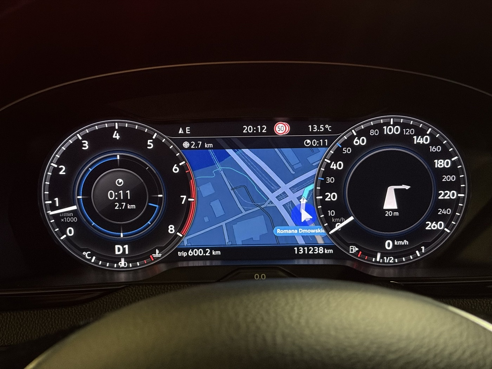
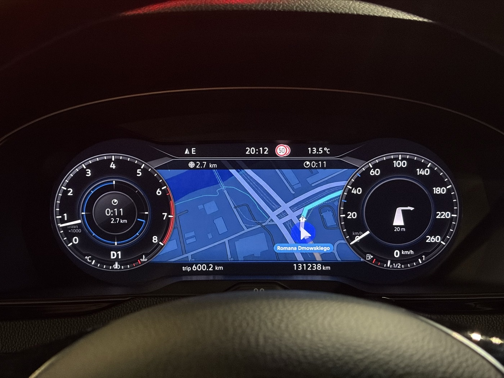
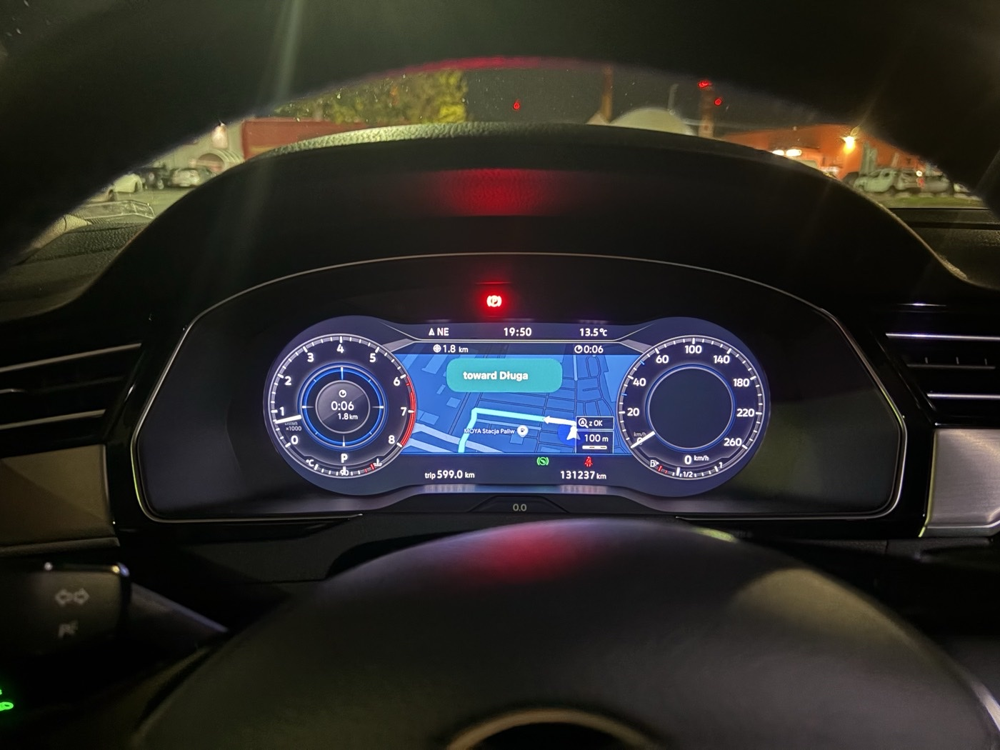
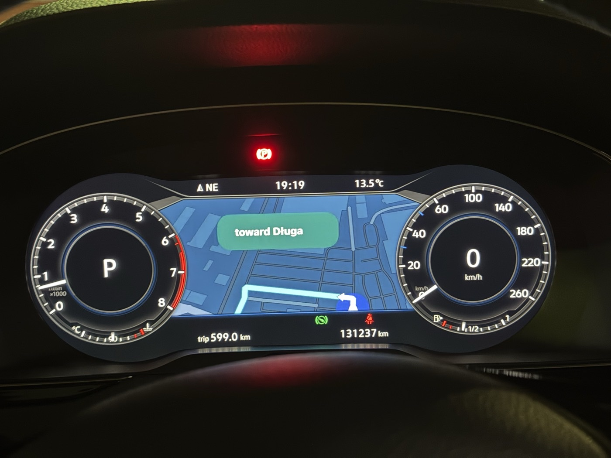
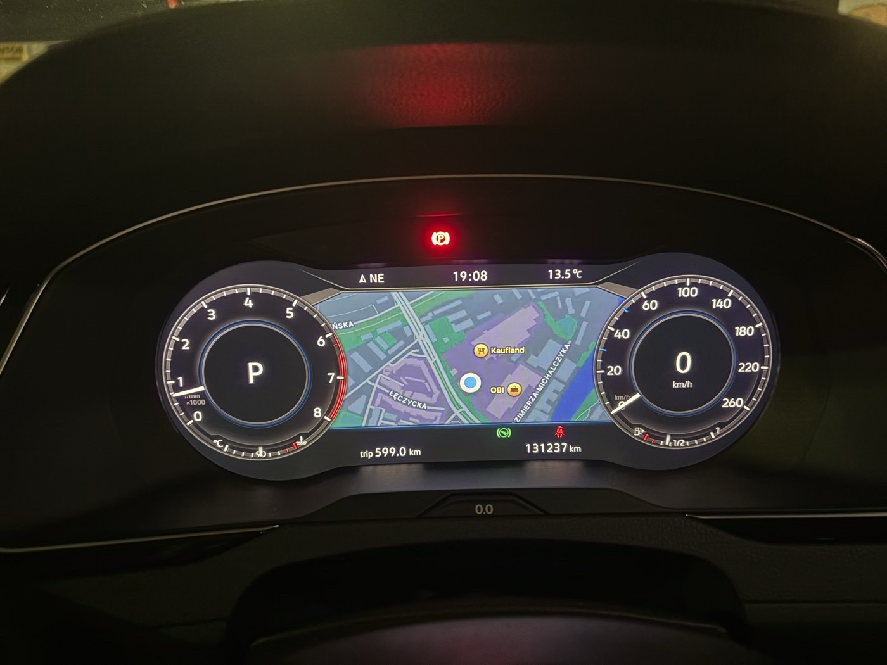
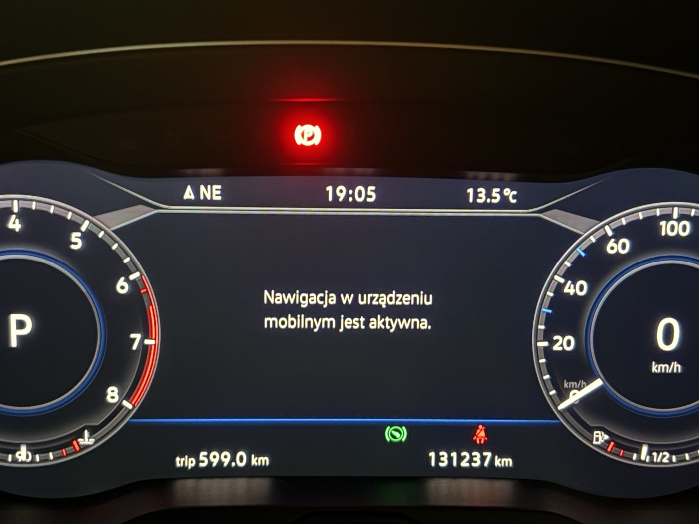

Co działa w aucie, jak klatka CarPlay 800×480 leży na panelu AID 1440×540 i który wariant core.so daje jaki układ. Model i pozycje znacznika są skalibrowane na zdjęciach z auta z 23–24.10.2026.
Stan w aucie
Działa
Mapa CarPlay w oknie mapy AID (Apple Maps i Google Maps, duże i małe tarcze), wariant url-map-hybrid: sama mapa, bez karty i bez znaku z iPhone'a; znaki pokazuje kamera VW. Domyślny map-clean ma ten sam układ.
Natywna strzałka manewru VW z dystansem do skrętu w prawej tarczy (pojawia się w ruchu; na postoju na starcie trasy nie ma manewru).
Natywny dystans i czas do celu na pasku nad mapą i w lewej tarczy.
Mapa zostaje przy prowadzeniu w Apple Maps (NavActiveIgnore).
Zoom mapy strzałkami na kierownicy, tytuł i wykonawca na AID, tryb dzień/noc.
Pakiety
Etap A: obraz na AID (dio_manager z nakładką, core.so wariantu). Zmiana wariantu podmienia jeden core.so, potem restart, bez „Potwierdz”.
System RG (paczka E): sterownik iAP2, iap2.cfg, czytnik prowadzenia.
Java: nai, np, rg, zoom, dn. Każda: „Wlacz: …”, restart, sprawdzenie i „Potwierdz” w tym samym starcie.
Karta instalacyjna z installer/build_card_install.py i osobna karta ratunkowa z installer/build_rescue.py (przywraca fabryczne HMI).
Do sprawdzenia
Warianty w aucie: card-clean (z kartą manewru), map-clean-l40 (lekko w lewo) i map-square (układ mathsls, bliżej kwadratu).
Natywna strzałka w Waze.
Model panelu
Widok AID
Wariant
klatka 800×480 (część pod paskami i tarczami) safe area wariantu znacznik pozycji (Google Maps, pozycja z pomiaru)
Zdjęcia z auta

24.10, url-map-hybrid, duże tarcze. Natywna strzałka „20 m” w prawej tarczy, 0:11 / 2.7 km w lewej, znak 50 z kamery VW. Znacznik ok. 150–165 kolumn klatki na prawo od środka okna, przy prawej tarczy.

24.10, url-map-hybrid, małe tarcze. Pasek dystans/czas nad mapą, strzałka w prawej tarczy. Znacznik w pionie dobrze, w poziomie też na prawo od środka.

23.10, url-card-hybrid. Karta Google „toward Długa”, znacznik widoczny, nakładka zoomu „100 m”. Karta duża; 240×144 mm jej nie zmniejsza.

23.10, url-card-hybrid-tall. Pierwszy wariant: znacznik Google ucięty dołem okna (safe area do wiersza 460).

23.10, pierwszy obraz. Apple Maps bez prowadzenia, zaraz po instalacji etapu A.

23.10, bez NavActiveIgnore. Przy prowadzeniu w Apple Maps licznik zasłania mapę komunikatem VW. Paczka nai to usuwa (Google Maps go nie wywołuje).
Na czym stoi model
Klatka leży 1:1
Strumień 800×480 nie jest skalowany: leży na panelu piksel w piksel w x 320–1120, y 60–540. Przełączenie tarcz zwęża tylko okno mapy: kolumny klatki 65–735 (małe) i 148–652 (duże), w obu środek na kolumnie 400. Wiersze 65–405 w obu widokach.
Pomiar z fabrycznej nawigacji VW na AID w aucie (21.10) i zrzutów VW z internetu; dokładność ok. ±15 px.
Pomiary panelu
panel AID
małe tarcze
duże tarcze
górny pasek do
125 px
125 px
pasek dystans/czas do
171 px
171 px
dolny pasek od
465 px
465 px
okno mapy (x)
385–1055
468–972
lewa tarcza (środek, r)
260,310 · 195
292,285 · 240
prawa tarcza (środek, r)
1180,310 · 195
1148,285 · 240
Czego nauczyło nas auto
Adres …/instrumentcluster/map działa w Apple i Google: bez karty.
Google stawia znacznik nisko i na prawo w safe area: dół safe area musi być ok. wiersza 404, a nie 450–460.
Deklaracja 240×144 mm nie zmniejszyła karty Google (porównanie z 160×96 mm nie zrobione).
showSpeedLimit=yes nic nie pokazuje; showETA=no nie do oceny, bo kartę zastąpiła sama mapa.
Pasek dystans/czas i strzałkę rysuje licznik (BAP) z danych iAP2 RouteGuidance; obrazu CarPlay nie zasłaniają, poza górnym pasem okna.